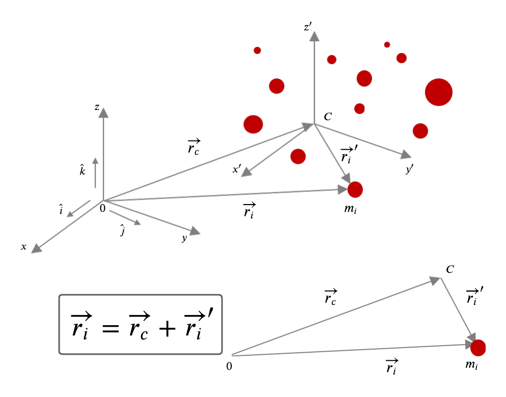
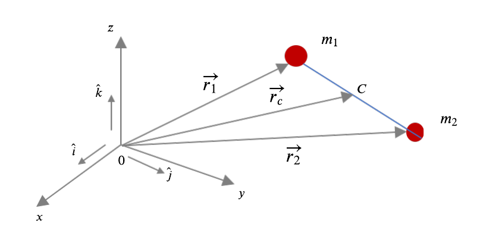
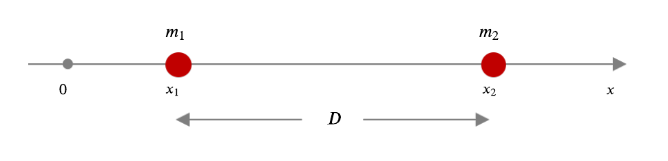
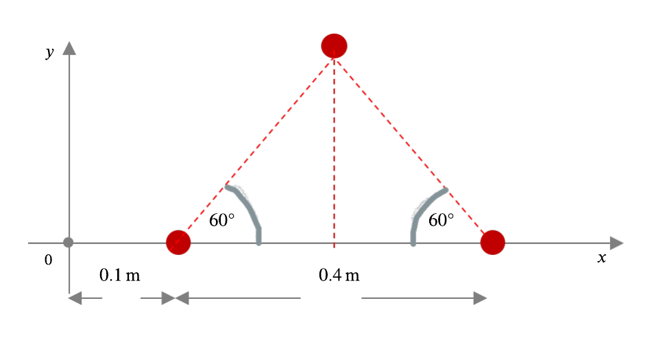

2. Dinámica de sistemas de partículas#
Las
Leyes de Newtonse formularon para analizar la dinámica de una sola partícula. Sin embargo, en vibraciones el interés es comprender cuerpos flexibles y que además, ellos pueden oscilar.Sistema de partículas: Vamos a considerar un sistema que consta de \(N\) partículas.
Nota
Sistema de \(N\) partículas donde la partícula \(i\)-ésima tiene masa \(m_i\).
Como se observa en la figura, resulta casi imposible describir con claridad cómo se mueve cada una de las partículas.
Nota
Entonces para dicho sistema, ¿cómo podemos aplicar nuestro conocimiento acerca de fuerzas, momentos, energía cinética y potencial, y cantidades que se conservan?.
Centro de Masa:Se dice que cuando el movimiento de un cuerpo flexible implica no sólotraslación, sino tambiénrotación, ovibración, o todas simultáneamente, se debe modelar al cuerpo como si fuese unsistema de partículas.A pesar de lo complejo que pueda resultar todo ese movimiento del sistema, existe un único punto, llamado
Centro de Masa(\(C\)), cuyo movimiento de traslación es una característica del sistema como un todo.Supongamos que tenemos un sistema de solamente dos partículas: \(m_1\) y \(m_2\) que se mueven en el espacio, con coordenadas \((x_1, y_1, z_1 )\), y \((x_2, y_2, z_2)\).
Definamos sus vectores de posición como \(\vec{r_1}\) y \(\vec{r_2}\).

El centro de masa, \(C\), de este sistema se encuentra en algún lugar a lo largo de la línea recta que une las dos masas, con coordenadas \((x_C, y_C, z_C )\). Definimos el vector de posición de \(C\) como:
Las componentes \(x\), \(y\) y \(z\), del centro de masa son:
2.1. Posición del centro de masa en 1 dimensión para un sistema de dos partículas.#
Supongamos un sistema de dos partículas y que conocemos además, sus masas: \(m_1=m\) y \(m_2=m\).
Las masas se ubican en los puntos \(x_1\) y \(x_2\) del eje \(x\), como se muestra en la figura:

Si la distancia entre las dos partículas la llamamos \(D = x_2 - x_1\), y considerando que \(y_i=z_i=0,\quad i = 1,2\), tenemos que \(y_C =z_C = 0\).
En consecuencia, la posición del centro de masa en la dimensión \(x\) es:
Pero, usando \(x_2= D + x_1\), nos queda:
Nota
Como demuestra el ejemplo, la posición del centro de masa no coincide necesariamente con la posición de una partícula del sistema.
Analizar qué sucede con \(x_C\), cuando el origen \(0\) del sistema se ubica donde está la partícula \(m_1\).
Analizar además, qué ocurre con \(x_C\) si la masa de la partícula \(m_2\) es igual a \(2m\).
Si en este último caso, el origen \(0\) del sistema se traslada al centro de masa (es decir, quedando como \(0'\)), y desde ahí, se miden las distancias a cada una de las masas y se ponderan esas distancias por sus masas respectivas, y luego se suma, entonces qué resultará? Analizar y comentar este resultado.
2.2. Posición del centro de masa en 2 dimensiones para un sistema de tres partículas.#
En el siguiente ejemplo, se pide encontrar el centro de masa de un sistema de 3 partículas que tienen cada una, masa \(m\) = 1 kg.

2.3. Posición del centro de masa en 3 dimensiones para un sistema de tres partículas.#
En el siguiente ejemplo se debe encontrar el centro de masa de un sistema en 3 dimensiones que consta de tres partículas. Las partículas tienen masas \(m_1\) = 0,5 (\(kg\)), \(m_2\) = 2 (\(kg\)) y \(m_3\) = 5 (\(kg\)). Sus posiciones en el espacio son \(P_1\)(−3,1,2) (\(m\)), \(P_2\)(0,1,2) (\(m\)) y \(P_3\)(−1,3,0) (\(m\)), respectivamente.
{kind=link}
2.4. Posición del centro de masa en 3 dimensiones para un sistema de 8 partículas.#
Es más fácil dividir la ecuación vectorial del vector de posición del centro de masa en sus componentes como se ve en las Ecs. (
21)-(23) y luego, por separado, evaluar cada una de las componentes. Encontrar el centro de masa del siguiente sistema de ocho partículas, ubicadas en las esquinas de un cubo, todas de igual masa \(m\) (\(kg\)) y separadas una distancia \(L\) (\(m\)), como se muestra en la figura siguiente:
{kind=link}